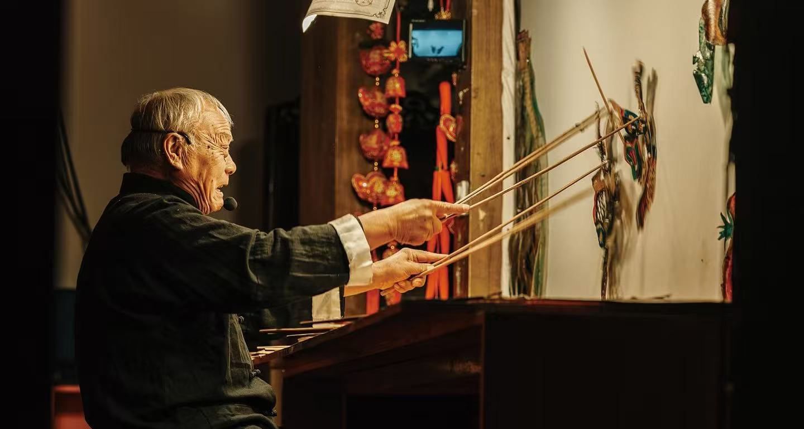
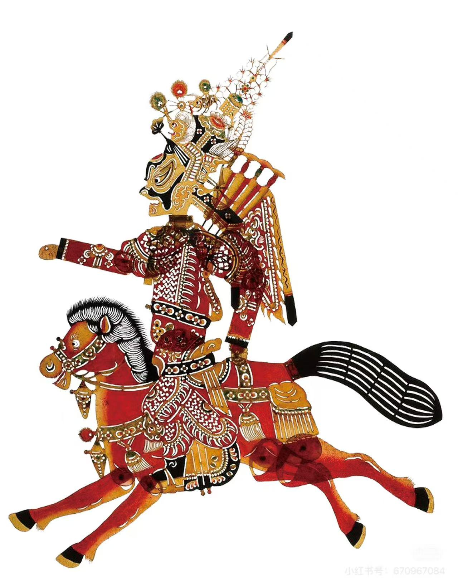
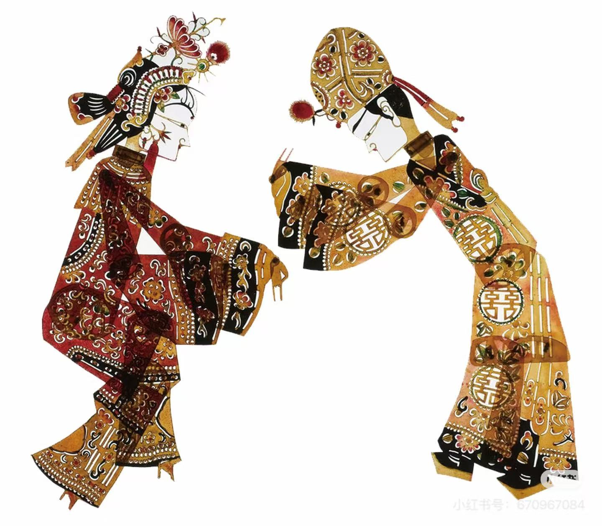
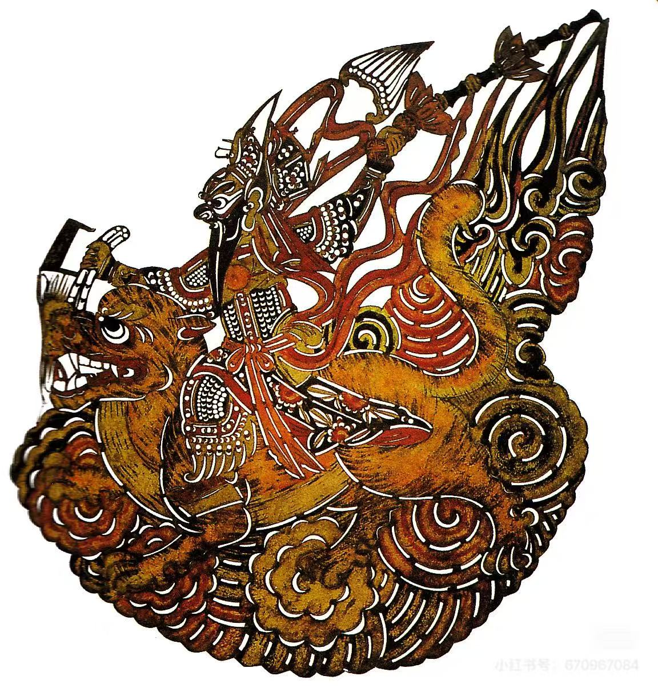
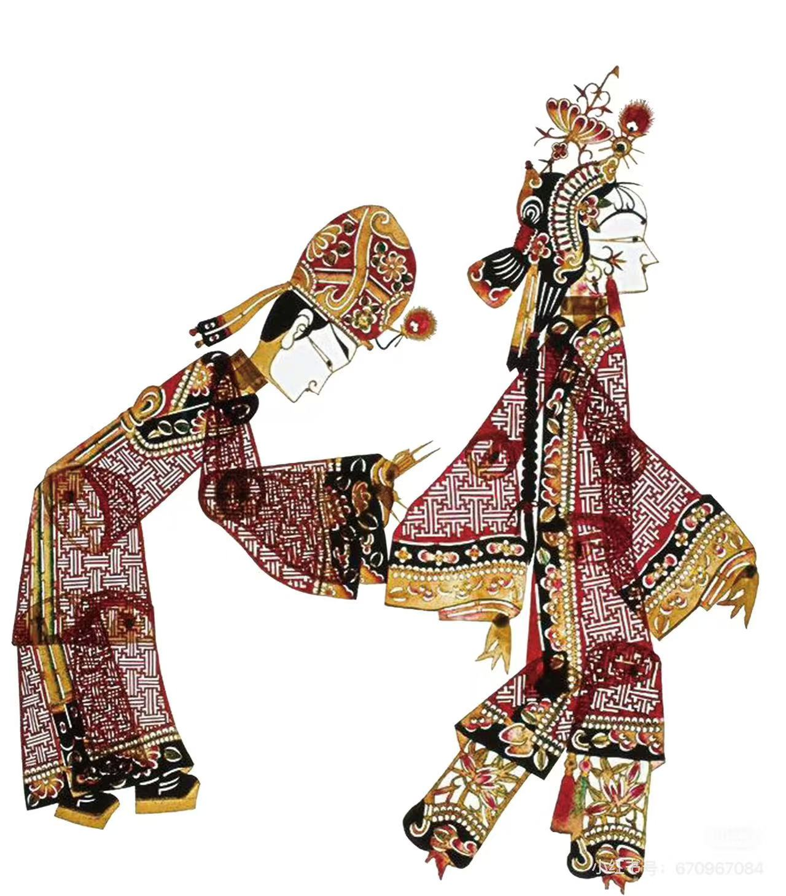
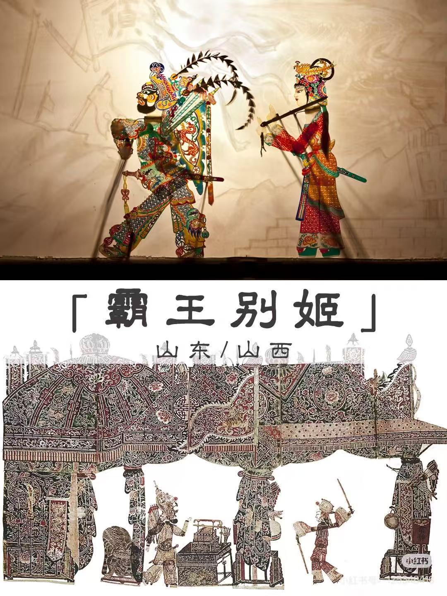
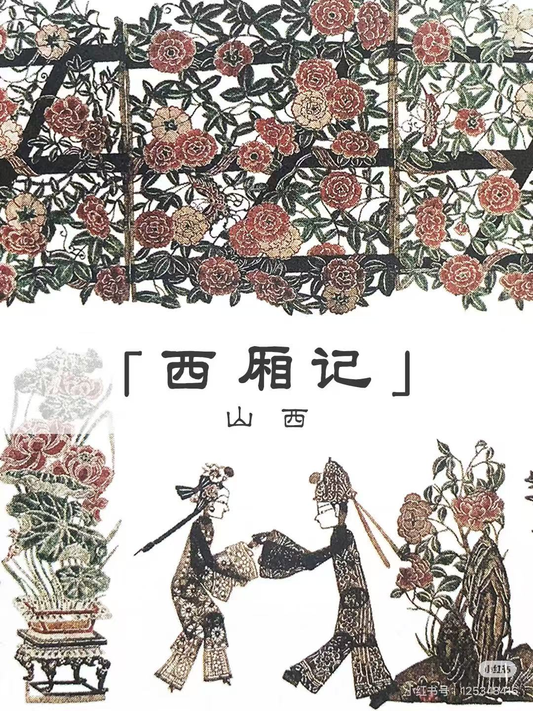
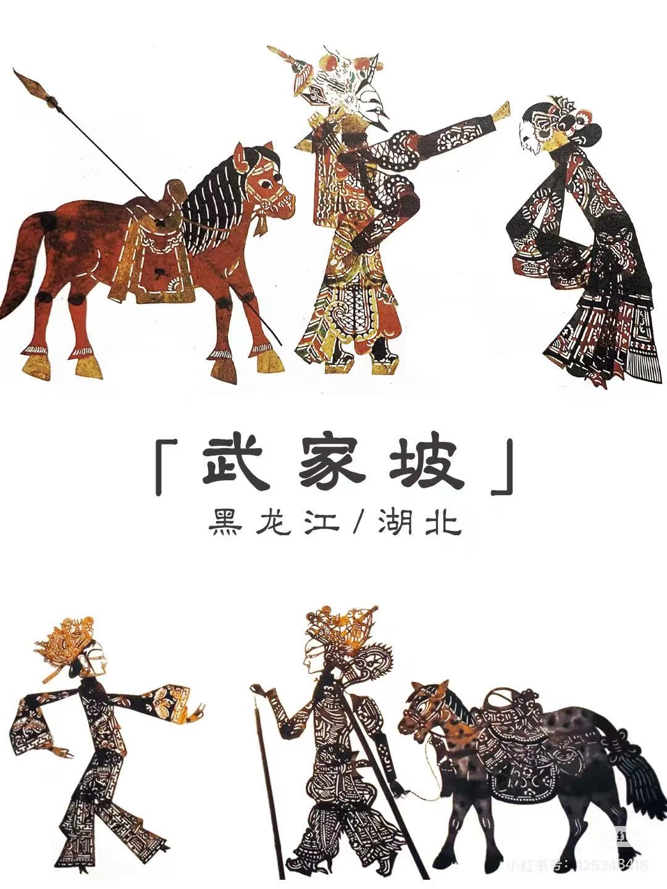
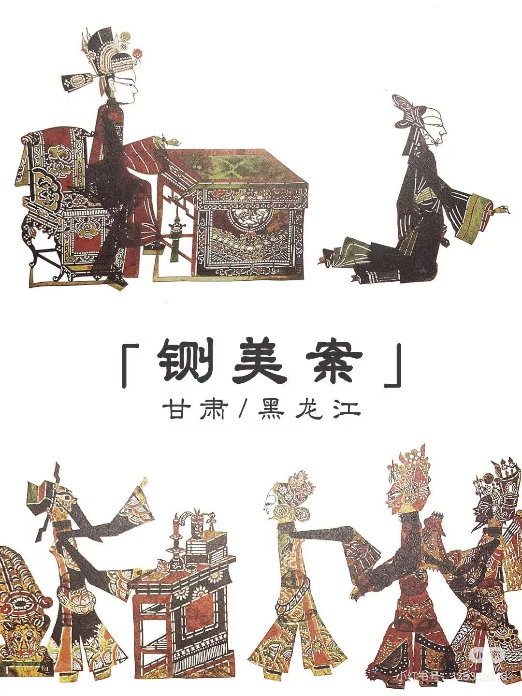

皮影戏，又称"影子戏"或"灯影戏"，是一种以兽皮或纸板做成的人物剪影以表演故事的民间戏剧。在过去还没有电影电视的年代，皮影戏曾是十分受欢迎的民间娱乐活动之一。艺人们在白色幕布后面，一边操纵影人，一边用当地流行的曲调讲述故事，同时配以打击乐器和弦乐，有浓厚的乡土气息。其流行范围极为广泛，并因各地的语言唱腔不同而形成多种多样的皮影戏。
皮影戏是中国民间古老的传统艺术，老北京人都叫它"驴皮影"。据史书记载，皮影戏始于西汉，兴于唐朝，盛于清代，元代时期传至西亚和欧洲，可谓历史悠久，源远流长。
汉武帝爱妃李夫人染疾故去了，武帝的思念心切神情恍惚终日不理朝政，大臣李少翁一日出门，路遇孩童手拿布娃娃玩耍，影子倒影于地栩栩如生，李少翁心中一动，用绵帛裁成李夫人的影像，涂上色彩并在手脚处装上木杆，入夜围方帷，张灯烛，恭请皇帝端坐帐中观看，武帝看罢龙颜大悦，就此爱不释手，这个载入《汉书》的爱情故事，被认为是皮影戏最早的渊源。

皮影戏的形象具有很高的立体感和生动性，使观众感受到戏剧张力。

皮影戏的幕布通常采用鲜艳的颜色，使画面更加生动夺目。

皮影戏表演时，通常会有专门的乐器伴奏，使表演更加引人入胜。

通过歌唱、念白等方式，讲述故事内容，使观众更好地理解剧情。

《霸王别姬》

《西厢记》

《武家坡》

《铡美案》